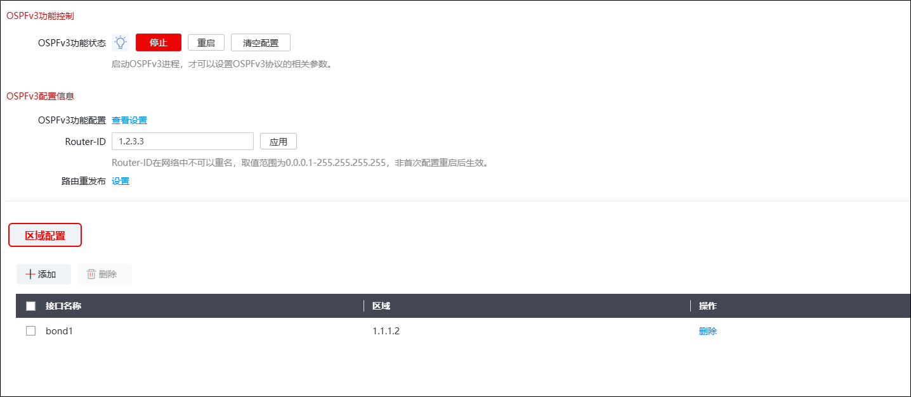
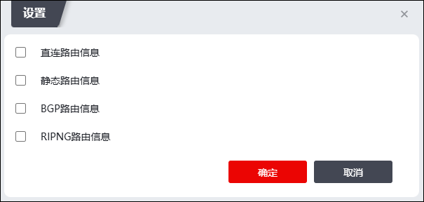
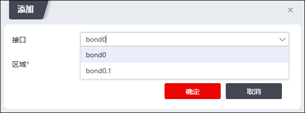

IPv4网络中广泛使用的OSPFv2协议，由于在报文内容、运行机制等方面与IPv4地址联系的过于紧密，导致它的可扩展性和适应性被大大的限制在了IPv4网络环境中。为了使OSPF在IPv6网络环境中得到更好的应用，同时保留原有的更多优点，因此，在OSPF的基础上形成了OSPFv3协议。
无论是OSPFv2还是OSPFv3，OSPF协议的基本运行原理是没有区别的，然而，由于IPv4和IPv6协议意义的不同，地址空间大小的不同，它们之间也存在一些不同点。不同之处主要有：
l术语不同： 在OSPFv3中，用"链路（link）"取代了OSPFv2中的"网络（network）"或"子网（subnet）"的概念。
l路由进程运行方式不同：OSPFv3进程运行在链路上，OSPFv2进程运行在子网上。
l链路多实例复用：OSPFv3支持链路多实例复用，一条链路上可以运行多个OSPF实例。
lRouter ID唯一标识邻居：在OSPFv2中，当网络类型为点到点或者通过虚连接与邻居相连时，通过Router ID来标识邻居路由器，当网络类型为广播或NBMA时，通过邻居接口的IP地址来标识邻居路由器。OSPFv3取消了这种复杂性，无论对于何种网络类型，都是通过Router ID来唯一标识邻居。
lLSA类型不同：与OSPFv2相比，OSPFv3新增了Link LSA和Intra Area Prefix LSA。
lLSA的泛洪范围：LSA的泛洪范围已经被明确地定义在LSA的LS Type字段
l支持对未知类型LSA的处理：在OSPFv2中，收到类型未知的LSA将直接丢弃，OSPFv3在LSA的LS Type字段中增加了一个U比特位来位标识对未知类型LSA的处理方式：如果U比特置1，则对于未知类型的LSA按照LSA中的LS Type字段描述的泛洪范围进行泛洪；如果U比特置0，对于未知类型的LSA仅在链路范围内泛洪。
|
²通过WebUI只可以配置基本的OSPFv3路由选项，其他高级参数只能通过CLI命令配置。 |

| 步骤1 | 选择 。激活“OSPFv3”标签页。如下图所示。 |

1）点击【启动】按钮便可启动OSPFv3进程。只有启动了OSPFv3进程，才可以设置OSPFv3协议的相关参数。
2）点击【停止】按钮即可停止OSPFv3进程运行。
3）点击【重启】按钮，重新启动OSPFv3进程。当网络在当前运行的OSPFv3协议下出现某些不良状况，重启OSPFv3进程可以达到改善网络运行状况的目的。重启OSPFv3进程不会改变OSPFv3协议的参数配置。
4）点击『查看设置』按钮，弹出查看界面，可以查看OSPFv3路由协议的配置、接口、邻居和路由信息。
5）点击【清空配置】按钮，可以清空OSPFv3配置信息；进程开启或关闭时均可清空配置信息。
| 步骤2 | 设置路由ID。 |
在“Router-ID”文本框中输入标识路由器身份的route-id，点击【应用】按钮使设置生效。该项为必选项。route-id用于在OSPFv3协议中标识路由器，必须由管理员手动指定。route-id在网络中不可以重名，取值范围为0.0.0.1-255.255.255.255。
| 步骤3 | 路由重发布。 |
1）点击『设置』按钮，进入重发布信息设置页面，如下图所示。

2）勾选要重新发布的路由类型，将对路由表中的该类路由重新发布。
| 步骤4 | 设置区域。 |
1）在“区域配置”页签处点击『添加』，进入“添加”界面，如下图所示。

在设置区域时，各项参数的具体说明如下表所示。
参数 |
说明 |
|---|---|
接口 |
在下拉框中选择运行OSPFv3协议的接口。 说明： 支持的接口类型有物理接口、Bond、vlan、子接口、GRE接口。 |
区域 |
必选项，设置属于该区域的网段。 说明： 1）每个网段只能属于一个区域，且格式为点分十进制，取值范围在0.0.0.0-255.255.255.255之间。 2）0.0.0.0表示区域0，0.0.0.1表示区域1。 |
2）点击【确定】按钮完成区域的配置。
| 步骤5 | 删除网段。 |
选中配置的网段，点击【删除】按钮可删除配置的网段。一次可以选择多个网段。